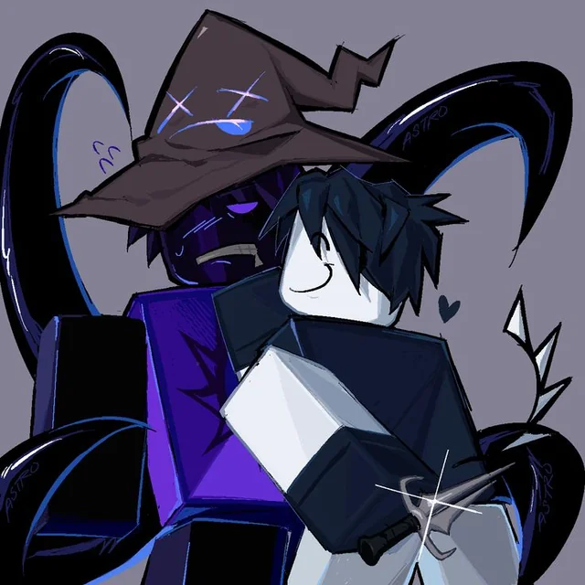

About Azure
Azure, real name Aspen, is Two Time's formal partner and another devoted follower of the Family Home For The Reborn. After Azure's tragic death involving Two Time, an unknown entity would then transform him into a killer. Forced to feel fury and rage. would was then sent to the Forsaken realm.

Two Time and Azure
Azure’s characteristics
- Calm
- Kindhearted
- Struggles with their anger
- Plant Lover